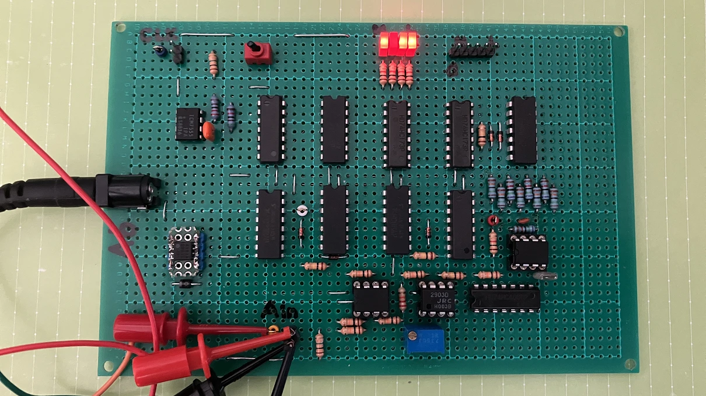
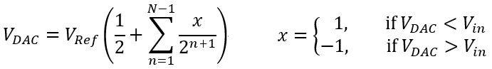
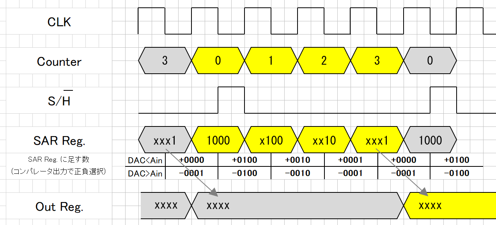
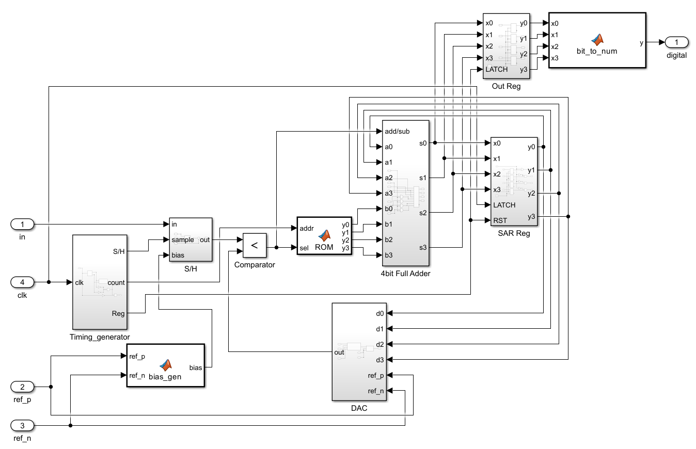
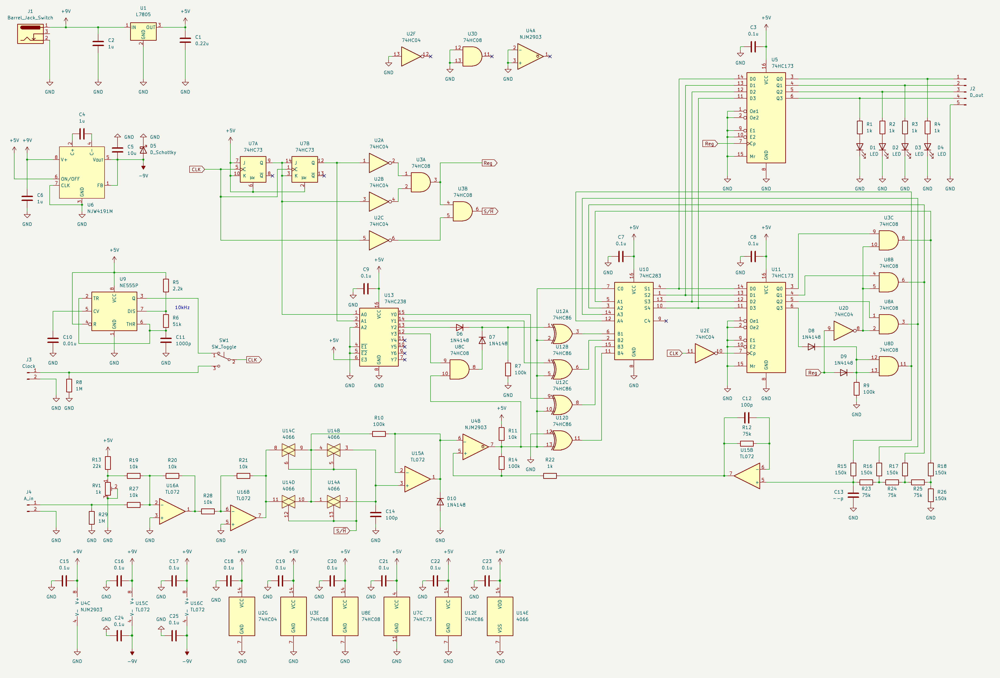
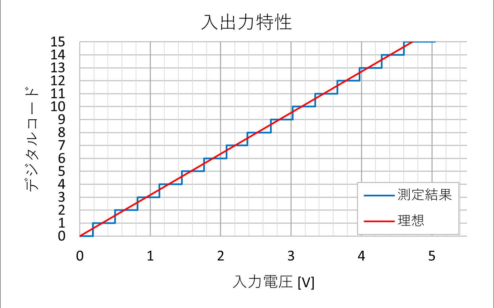
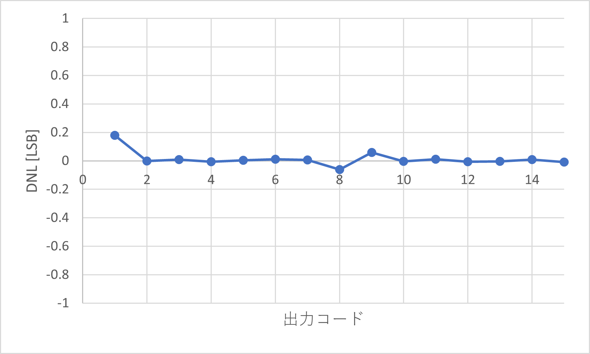
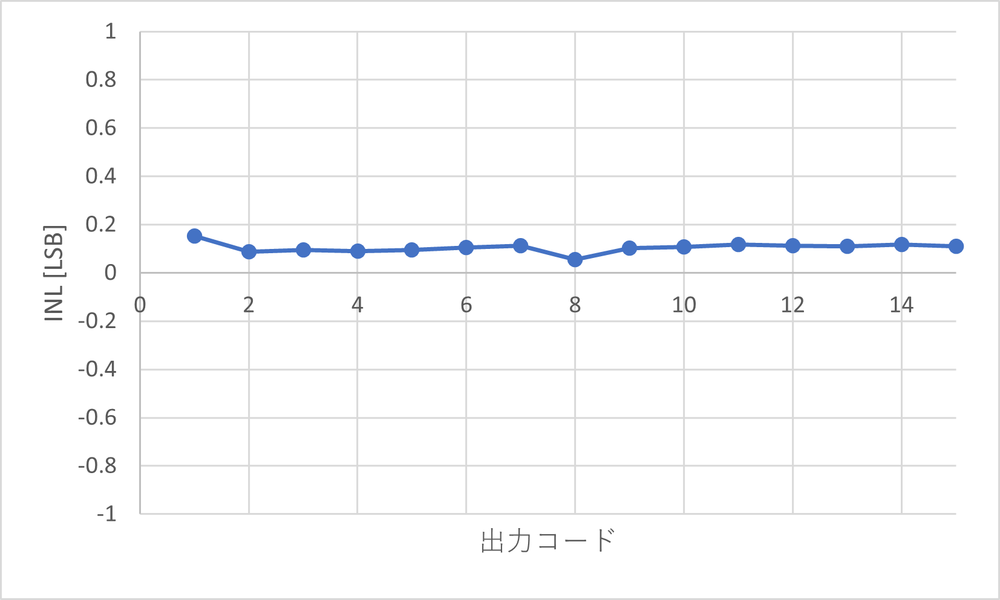

4bit の逐次比較型 ADC (SAR ADC) を作りました。専用の ADC を用いずに標準ロジック IC で製作することで、SAR ADC のロジックを理解することが目的です。

完成写真
SAR ADC は、以下のブロック図の構成をしています。
ブロック図
入力信号と DAC の出力を比較し、バイナリサーチによって上位ビットから順に変換結果を確定していく動作を行います。
変換の初めには、DAC に Vref
の半分の電圧を発生させておきます。それ以降の電圧は、次の式で表されます。

DAC電圧式
この式をもとに設計した ADC のタイミングチャートと、Simulink のブロック図です。

タイミングチャート

Simulinkブロック図
今回はコンパレータの出力に応じて足し引きする数値を変えることで逐次比較のロジックを実現しました。
Simulink 上で設計したブロック図を基に、回路を起こしました。

回路図
JK フリップフロップの 74HC73 で同期カウンタを構成し、その出力をもとに各ブロックのタイミングを生成しています。非同期カウンタにするとカウンタ出力のビットごとの遅れにより、意図しないタイミングでハザードが発生する原因になります。
Simulink のブロック図上で ROM と記載されていたブロックは、74HC238 とその周辺の AND と OR によって実現しています。今回の回路ではロジック IC 数削減のため、ダイオードによるワイヤード OR を使用しています。
74HC86 と、74HC283 で 4bit 全加算 / 減算器を構成しています。全加算器の片方の入力を EXOR でビット反転し、1 を加えてから加算を行うことで減算を実現します。
逐次比較レジスタ (SAR Reg) である U11 の 74HC173 は、変換動作の初めに 0b1000 にリセットする必要がありますが、レジスタの中身をリセットするのではなく出力を置き換える形にしています。こうすることで必要な論理回路の規模を小さくすることができます。
DAC には R-2R のラダーを用いたものを組みました。量子化誤差を ±0.5LSB の範囲に収めるには、DAC の出力範囲を +0.5LSB
分オフセットする必要がありますが、今回はDACではなく入力電圧のオフセットを調整する形にしました。このオフセットは U16A
のオペアンプとその周辺回路で調節します。単電源で動作できるようにしたかったのですが、前述のオフセットを調節するために加算回路を用いようとするとどうしても負電源が必要になってしまうので、チャージポンプ電源を組み込みました。
……この記事をここまで書いた時に、オフセット調整回路を無駄に大規模にしてしまったことに気づきました。トランジスタ 1石か
2石でも要件を満たすオフセット調整回路を組めますね。負電源もいりませんでしたorz
サンプルホールド回路には、アナログスイッチを並列に用いることで ON 抵抗を低くすることを狙いました。また、U14A、U14B それぞれの両端にかかる電圧差をなくすことでスイッチ OFF 時のコンデンサからの漏れ電流を抑え、ホールド時の電圧誤差を減らす工夫をしています。
入出力特性、DNL、INL は以下のようになりました。

入出力特性グラフ

DNLグラフ

INLグラフ
これらの誤差の原因のうち最も影響力があるのは DAC の精度です。今回は DAC の R-2R ラダーに 1% 精度の金属皮膜抵抗を用いたのですが、さらに精度を上げるにはここの抵抗の相対精度を上げる必要がありそうです。
サンプリングレートは 50kHz 程度まで上げることができました。これ以上上げるにはDAC の応答を速くする必要がありますが、安定性とのトレードオフになります。市販の 8bit DAC IC を使えば、精度と速度を楽に改善できそうです。
最後に、サイン波を入力したときにサンプリングされた電圧と DAC の出力波形を示します。SAR ADC の肝であるバイナリサーチの様子がよくわかります。
バイナリサーチの様子